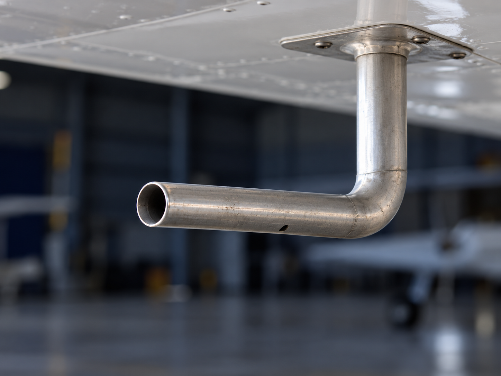
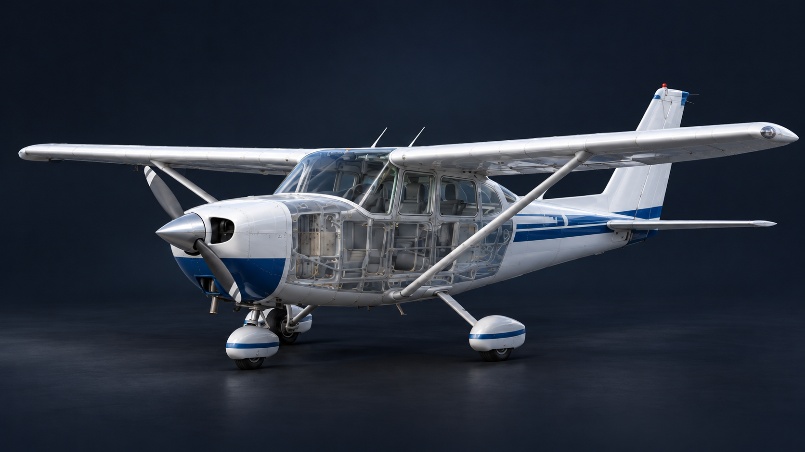

Configura el vuelo
Ajusta velocidad, altitud y razón de ascenso o descenso.

1 · Entrada obstruida2 · Drenaje obstruidoModifica los valores; los instrumentos responden al instante.
Referencia: IAS ideal sin falla. Altitud ISA · QNH fijo 1013,25 hPa. Inicia el vuelo para integrar la altitud con el tiempo.
Fuga idealizada: Ps de la línea = Ps exterior − este valor.
Compara las indicaciones y selecciona la causa probable.
Explora la relación entre las presiones del sistema Pitot-Static y los instrumentos de vuelo. Practica el diagnóstico sin intervenir una aeronave.
Abrir simulador →
Ajusta velocidad, altitud y razón de ascenso o descenso.
Activa una falla y sigue su efecto en los tres instrumentos.
Resuelve casos con falla oculta y revisa tus resultados.
La configuración y los marcadores de la falla se ocultan durante el ejercicio. El circuito muestra solo la conexión normal hasta responder.
Los intentos se guardan en este navegador. Puedes exportarlos para tu informe.
| Fecha | Modalidad | Falla | Respuesta | Resultado |
|---|
Una plataforma educativa para explorar indicaciones y formular diagnósticos.
Anemómetro: utiliza la diferencia entre presión total y estática. Unidad: nudos (kt).
Altímetro: convierte presión estática en altitud ISA. Aguja larga: centenas de pies; corta: miles; triángulo: decenas de miles. Escala repetida de 0 a 9.
Variómetro: representa la velocidad vertical estabilizada, en ft/min. Su escala dice ×100 ft/min; +5 significa +500 ft/min.
La entrada de velocidad es una referencia equivalente a IAS ideal, no TAS. Se usa q = ½ρ₀V² y Pt = Ps + q, con ρ₀ = 1,225 kg/m³. La atmósfera estándar se limita a 0–18000 ft y el QNH se mantiene en 1013,25 hPa.
Las obstrucciones conservan la presión al seleccionarlas. Cambiar de falla vuelve a capturar las condiciones actuales. La fuga estática supone una depresión de cabina constante ajustable; no representa un avión específico.
El VSI se representa en régimen estabilizado, sin retardo ni transitorio de bloqueo. Cambiar manualmente la altitud establece una nueva condición de vuelo, no una subida instantánea física. Las agujas se limitan a su escala; la lectura numérica conserva el valor calculado.
La aeronave es una ilustración y el circuito es funcional, sin posición física exacta de tuberías. Recurso didáctico; no sustituye manuales ni equipos de prueba de mantenimiento.
FAA · PHAK, capítulo 8: Flight Instruments ↗
FAA · AC 91-43: Unreliable Airspeed Indications ↗
Guía para publicar en GitHub Pages ↗
Sin instalación, cuentas, librerías externas ni servidor. HTML, CSS y JavaScript editables. Resultados locales; no se envían datos a terceros.